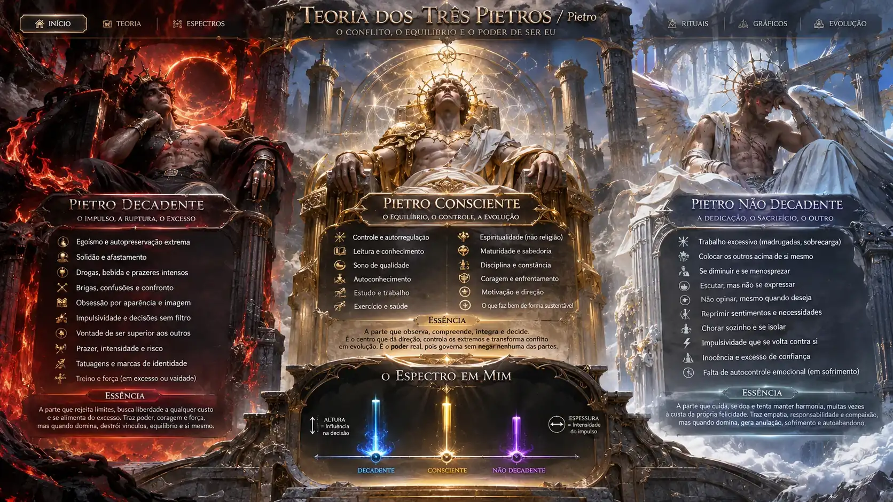

Dedicação extrema
Você descreve o impulso de cuidar e colocar os outros acima de si, até por meio de juramentos. Havia muita entrega, mas poucos limites.
/ Pietro · O conflito, o equilíbrio e o poder de escolher

O Templo representa tendências que podem disputar espaço nas decisões. Inferno, trono e céu são metáforas artísticas para observar desejos, responsabilidades e escolhas — não entidades literais, poderes sobrenaturais ou um diagnóstico.
O objetivo não é destruir um extremo: é aprender a identificar sua mensagem, seus riscos e o que pode ser escolhido de maneira sustentável.
Escolha um trono para observar seu papel simbólico. Cada governante representa um conjunto de tendências suas; nenhum é uma pessoa independente.
Reconstrua sua teoria: três linhas verticais saindo da mesma base. Ajuste altura (influência) e espessura (intensidade) separadamente, sem transformar o desenho em um teste psicológico.
Arraste para girar a perspectiva do altar
Uma prática breve, artística e inteiramente opcional de observação. Nada deve ser invocado, combatido ou transformado literalmente.
Um mapa narrativo provisório das fases que você contou. Essas etapas não determinam quem você é nem explicam sozinhas por que as coisas aconteceram.
Você descreve o impulso de cuidar e colocar os outros acima de si, até por meio de juramentos. Havia muita entrega, mas poucos limites.
Você relata uma mudança radical em direção à independência e ao risco. Na teoria, é a ascensão do espectro decadente.
A experiência com a igreja, os conflitos com pessoas e os retornos entre extremos entram na história como tentativas de reorganização.
Surge a ideia consciente das três linhas: perceber a oscilação, investigar o custo dos extremos e construir mais liberdade de escolha.
O centro não precisa de uma guerra permanente para existir. Aqui ficam as condições que podem favorecer escolhas refletidas, sem exigir perfeição.
Dormir, comer, descansar e observar a própria energia podem ajudar a reduzir a sobrecarga. Estar exausto não torna uma perspectiva mais verdadeira.
Estudar, ler e desenvolver maturidade não precisam significar virar a noite ou provar valor. Curiosidade também pode ser leve.
É possível cuidar dos outros sem se anular, e desejar algo sem transformar as pessoas em instrumentos para consegui-lo.
Meditar ou representar as perspectivas com desenhos e palavras pode ser um exercício de atenção. Se aumentar a aflição, a prática pode parar.
O decadente, o consciente e o não decadente são nomes para experiências e tendências. O site não mede sua força psicológica, não prevê colapso e não sugere que exista uma entidade independente dentro de você.
Qualquer representação que aumente a cobrança ou a angústia pode ser abandonada. O espaço de escolha não depende de um ritual bem-sucedido.
Esta experiência é uma representação artística da sua teoria pessoal. Os três reinos são metáforas das tendências que você descreveu, não indivíduos, entidades sobrenaturais nem um diagnóstico clínico.
Os controles do gráfico são subjetivos e não registram seus dados. Para representar a teoria no papel, basta desenhar a base horizontal, as três linhas e ajustar sua altura e espessura. O ritual é opcional; você pode fechá-lo a qualquer momento.
O cenário utiliza a arte do último modelo visual selecionado, enquanto os elementos tridimensionais do gráfico são construídos com CSS e controles interativos. Não é um jogo 3D de câmera livre.